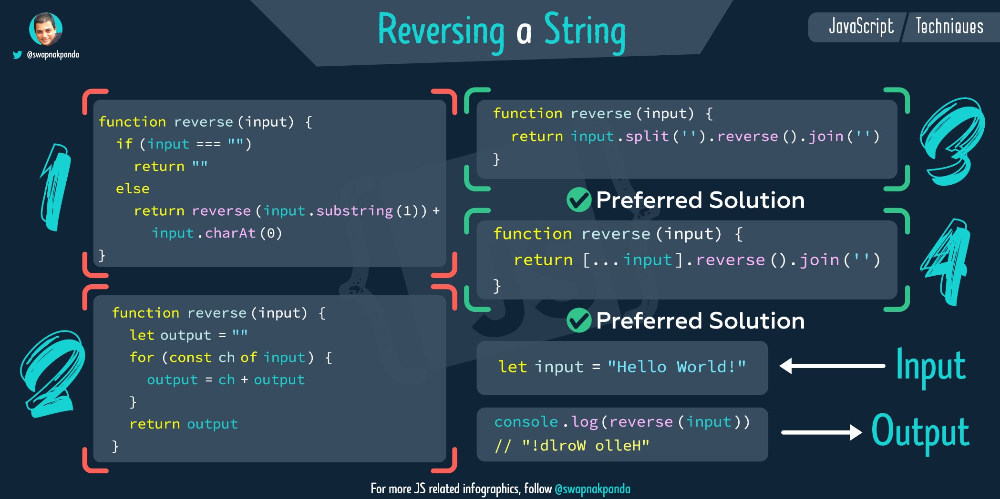

JavaScript often abbreviated JS, is a programming language that is one of the core technologies of the World Wide Web, alongside HTML and CSS. As of 2022, 98% of websites use JavaScript on the client side for web page behavior, often incorporating third-party libraries. All major web browsers have a dedicated JavaScript engine to execute the code on users' devices.
JavaScript is a high-level, often just-in-time compiled language that conforms to the ECMAScript standard. It has dynamic typing, prototype-based object-orientation, and first-class functions. It is multi-paradigm, supporting event-driven, functional, and imperative programming styles. It has application programming interfaces (APIs) for working with text, dates, regular expressions, standard data structures, and the Document Object Model (DOM). 
The ECMAScript standard does not include any input/output (I/O), such as networking, storage, or graphics facilities. In practice, the web browser or other runtime system provides JavaScript APIs for I/O.
JavaScript engines were originally used only in web browsers, but are now core components of some servers and a variety of applications. The most popular runtime system for this usage is Node.js.
Although Java and JavaScript are similar in name, syntax, and respective standard libraries, the two languages are distinct and differ greatly in design.